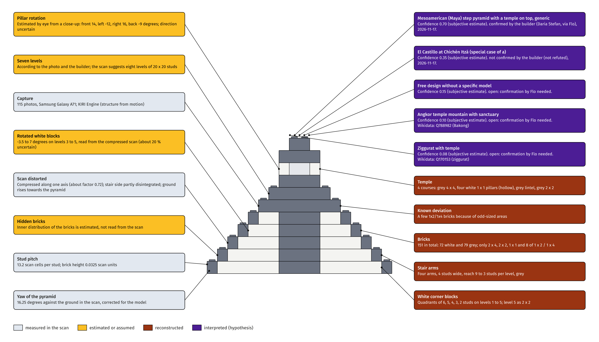

Instance models
The two LEGO pyramids as nodes of the graph: who built them, how they were scanned, which records carry the scan and the reconstruction, and what they were identified as. All values are read from the merged graph and the registry pins.
Pyramid 1
| Model | LEGO model 1: white stepped pyramid with column and figure |
|---|---|
| Built by | Flo (RSE, LEIZA) |
| Scan | 69 photos, Samsung Galaxy S26; KIRI Engine (SfM), scan at 15:46; app version not shown |
| Place | Apothekertrakt, Schönbrunn Palace, Vienna (Q131330) |
| Reconstruction | Reconstruction model 1 (lego.glb) |
| FDOx: scan | Lego Pyramid (KIRI Original): 10.5281/zenodo.24305240 (pinned version v1) |
| FDOx: reconstruction | Lego Pyramid (Reconstruction claude.ai): 10.5281/zenodo.24305343 (pinned version v1) |
| Identification | Identification of model 1 0.55 Monument: statue of a warrior on a column above a stepped base (Q51845395) 0.20 Stepped pyramid with a figure as a free play or fantasy scene 0.15 Abstracted watchtower or lookout with a sentry (Q947103) 0.10 Specific historical monument (special case of a, cannot be determined) Identification of the figure 0.75 Medieval warrior / soldier (Q4991371) 0.40 Figure comes from a Cobi series (style-based guess only) |

F4Pyramid 1: measured, estimated, reconstructed and interpreted
Schematic front view; widths follow the studs of the reconstruction. Numbers in the statements are read from the change documentation and the graph; the figure on the column is drawn schematically (own drawing). Source: ontology/lrec.ttl and the notes of the repository; Research Squirrel Engineers at LEIZA. PNG · SVG

Pyramid 2
| Model | LEGO model 2: stepped pyramid with a temple on top |
|---|---|
| Built by | Daria Stefan (TU Wien) |
| Scan | 115 photos, Samsung Galaxy A71; KIRI Engine (SfM); app version not shown; scan time not recorded |
| Place | Apothekertrakt, Schönbrunn Palace, Vienna (Q131330) |
| Reconstruction | Reconstruction model 2 (version 4) |
| FDOx: scan | Lego Pyramid Maya (KIRI Original): 10.5281/zenodo.24305428 (pinned version v3) |
| FDOx: reconstruction | Lego Pyramid Maya (Reconstruction claude.ai): 10.5281/zenodo.24305436 (pinned version v2) |
| Identification | 0.70 Mesoamerican (Maya) step pyramid with a temple on top, generic 0.35 El Castillo at Chichén Itzá (special case of a) 0.15 Free design without a specific model 0.10 Angkor temple mountain with sanctuary (Q788982) 0.08 Ziggurat with temple (Q170153) |

F5Pyramid 2: measured, estimated, reconstructed and interpreted
Schematic front view; stair-arm reach and corner blocks follow the reconstruction (v2 to v4). The builder confirmed the Maya step pyramid on 2026-11-17; El Castillo is not confirmed. Source: ontology/lrec.ttl and the notes of the repository; Research Squirrel Engineers at LEIZA. PNG · SVG